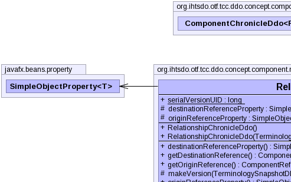

- java.lang.Object
-
- org.ihtsdo.otf.tcc.ddo.concept.component.ComponentChronicleDdo<RelationshipVersionDdo,RelationshipVersionBI>
-
- org.ihtsdo.otf.tcc.ddo.concept.component.relationship.RelationshipChronicleDdo
-
- All Implemented Interfaces:
- Serializable
public class RelationshipChronicleDdo extends ComponentChronicleDdo<RelationshipVersionDdo,RelationshipVersionBI>
- See Also:
- Serialized Form
-
 


-
-
Property Summary
Properties Type Property and Description javafx.beans.property.SimpleObjectProperty<ComponentReference>destinationReferencejavafx.beans.property.SimpleObjectProperty<ComponentReference>originReference
-
Field Summary
Fields Modifier and Type Field and Description protected javafx.beans.property.SimpleObjectProperty<ComponentReference>destinationReferencePropertyprotected javafx.beans.property.SimpleObjectProperty<ComponentReference>originReferencePropertystatic longserialVersionUID-
Fields inherited from class org.ihtsdo.otf.tcc.ddo.concept.component.ComponentChronicleDdo
additionalIds, concept, refexes
-
-
Constructor Summary
Constructors Constructor and Description RelationshipChronicleDdo()RelationshipChronicleDdo(TerminologySnapshotDI ss, ConceptChronicleDdo concept, RelationshipChronicleBI another)
-
Method Summary
Methods Modifier and Type Method and Description javafx.beans.property.SimpleObjectProperty<ComponentReference>destinationReferenceProperty()ComponentReferencegetDestinationReference()ComponentReferencegetOriginReference()protected RelationshipVersionDdomakeVersion(TerminologySnapshotDI ss, RelationshipVersionBI version)javafx.beans.property.SimpleObjectProperty<ComponentReference>originReferenceProperty()voidsetDestinationReference(ComponentReference destinationReference)voidsetOriginReference(ComponentReference originReference)-
Methods inherited from class org.ihtsdo.otf.tcc.ddo.concept.component.ComponentChronicleDdo
beforeUnmarshal, equals, getAdditionalIds, getComponentNid, getConcept, getIdCount, getPrimordialComponentUuid, getRefexes, getUuids, getVersionCount, getVersions, hashCode, setAdditionalIds, setComponentNid, setPrimordialComponentUuid, setRefexes, setVersions, toString
-
-
-
-
Field Detail
-
serialVersionUID
public static final long serialVersionUID
- See Also:
- Constant Field Values
-
destinationReferenceProperty
protected javafx.beans.property.SimpleObjectProperty<ComponentReference> destinationReferenceProperty
-
originReferenceProperty
protected javafx.beans.property.SimpleObjectProperty<ComponentReference> originReferenceProperty
-
-
Constructor Detail
-
RelationshipChronicleDdo
public RelationshipChronicleDdo()
-
RelationshipChronicleDdo
public RelationshipChronicleDdo(TerminologySnapshotDI ss, ConceptChronicleDdo concept, RelationshipChronicleBI another) throws IOException, ContradictionException
- Throws:
IOExceptionContradictionException
-
-
Method Detail
-
destinationReferenceProperty
public javafx.beans.property.SimpleObjectProperty<ComponentReference> destinationReferenceProperty()
-
makeVersion
protected RelationshipVersionDdo makeVersion(TerminologySnapshotDI ss, RelationshipVersionBI version) throws IOException, ContradictionException
- Specified by:
makeVersionin classComponentChronicleDdo<RelationshipVersionDdo,RelationshipVersionBI>- Throws:
IOExceptionContradictionException
-
originReferenceProperty
public javafx.beans.property.SimpleObjectProperty<ComponentReference> originReferenceProperty()
-
getDestinationReference
public ComponentReference getDestinationReference()
-
getOriginReference
public ComponentReference getOriginReference()
-
setDestinationReference
public void setDestinationReference(ComponentReference destinationReference)
-
setOriginReference
public void setOriginReference(ComponentReference originReference)
-
-